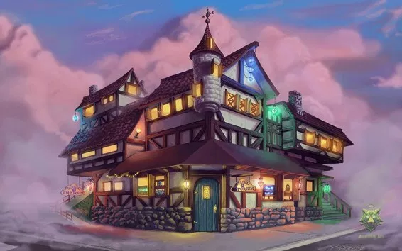

Fantasy Emporium a été fondé par Luna l'Enchanteresse au cœur de la Forêt Enchantée. Notre mission est de fournir des articles magiques de haute qualité aux aventuriers.
Nous croyons en la magie durable, en utilisant des matériaux respectueux de l'environnement pour fabriquer nos articles. Nos potions sont brassées avec soin, garantissant qu'elles sont sûres tant pour les aventuriers que pour l'environnement.
